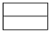
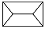
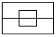
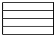
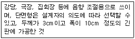
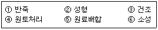
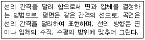

전산응용건축제도기능사 (2010-03-28 기출문제)
1과목: 건축구조
1. H형강, 판보 또는 래티스보 등에서 보의 단면의 상하에 날개처럼 내민 부분을 지칭하는 용어는?
- 웨브
- 플랜지
- 스티프너
- 거셋 플레이트
(정답률: 64%)

2. 블록구조의 기초 및 테두리보에 대한 설명으로 옳지 않는 것은?
- 기초보는 벽체 하부를 연결하고 집중 또는 국부적 하중을 균등히 지반에 분포시킨다.
- 테두리보의 나비를 크게 할 필요가 있을 때에는 경제적으로 ㄱ자보, T자형으로 한다.
- 테두리보는 분산된 벽체를 일체로 연결하여 하중을 균등히 분포시키는 역할을 한다.
- 기초보의 두께는 벽체의 두께보다 더 두껍게해서는 안된다.
(정답률: 71%)
3. 블록의 빈 속에 철근과 콘크리트를 부어넣는 것으로서 수직하중·수평하중에 견질 수 있는 구조로 가장 이상적인 블록구조는?
- 거푸집블록조
- 보강블록조
- 조적식블록조
- 블록장막벽
(정답률: 77%)
4. 벽돌구조의 아치(arch)는 부재의 하부에 어떤 힘이 생기지 않도록 의도된 구조인가?
- 압축력
- 인장력
- 수평반력
- 수직반력
(정답률: 61%)
5. 건물의 부동침하의 원인으로 옳지 않는 것은?
- 지반이 동결작용을 받을 때
- 지하수위가 변경될 때
- 이웃건물에서 깊은 굴착을 할 때
- 기초를 크게 할 때
(정답률: 82%)
6. 조적조에서 창문의 틀 옆에 세워대는 돌 또는 벽돌벽의 중간 중간에 설치한 돌을 무엇이라 하는가?
- 인방돌
- 창대돌
- 문지방돌
- 쌤돌
(정답률: 59%)
7. 입체 구조 시스템의 하나로서 축방향만으로 힘을 받는 직선재를 핀으로 결합하여 효율적으로 힘을 전달하는 시스템을 무엇이라 하는가?
- 막구조
- 셀구조
- 현수구조
- 입체트러스구조
(정답률: 71%)
8. 높이가 다른 바닥의 상호간에 단을 만들어 연결하는 구조체로서 세로 방향의 통로로 중요한 역할을 하는 것은?
- 수장
- 기초
- 계단
- 창호
(정답률: 84%)
9. 철골구조의 구조형식상 분류에 속하지 않는 것은?
- 트러스구조
- 현수구조
- 아치구조
- 경량철골구조
(정답률: 48%)
10. 철골구조에 대한 설명 중 옳지 않은 것은?
- 내구, 내화, 내진적이다.
- 장 스팬(span)이 가능하다.
- 해체 수리가 가능하다.
- 철근콘크리트 구조물에 비하여 중량이 가볍다.
(정답률: 60%)
11. 철근콘크리트 구조의 원리에 대한 설명으로 옳지 않은 것은?
- 콘크리트와 철근이 강력히 부착되면 철근의 좌굴이 방지된다.
- 콘크리트는 인장력에 강하므로 부재의 인장력을 부담한다.
- 콘크리트와 철근의 선팽창 계수가 거의 같다.
- 콘크리트는 내구성과 내화성이 있어 철근을 피복, 보호한다.
(정답률: 73%)
12. 벽돌구조에서 개구부 위와 그 바로 위의 개구부와의 최소 수직거리는?
- 10cm
- 20cm
- 40cm
- 60cm
(정답률: 72%)
13. 그림 중 꺽인지붕(curb roof)의 평면 모양은?




(정답률: 71%)
14. 흙의 붕괴를 방지하기 위한 벽의 일종으로, 수직방향으로 작용하는 수압과 토압에 저항하도록 만들어진 것은?
- 벽돌벽
- 블록벽
- 옹벽
- 장막벽
(정답률: 61%)
15. 다음 중 강구조의 주각부분에 사용되지 않는 것은?
- 윙 플레이트
- 데크 플레이트
- 베이스 플레이트
- 클립앵글
(정답률: 62%)
16. 목재 미서기문에서 윗홈대의 홈의 깊이는 보통 얼마 정도로 하는가?
- 0.3cm
- 1.5cm
- 3cm
- 4cm
(정답률: 69%)
17. 목조 벽체에 사용되는 가새에 대한 설명으로 옳지 않은 것은?
- 목조 벽체를 수평력에 견디게 하고 안정한 구조로 하기 위해 사용된다.
- 가새는 일반적으로 네모구조를 세모구조로 만든다.
- 주요건물에서는 한 방향 가새로만 하지 않고 X자형으로 하여 인장과 압축을 겸비하도록 한다.
- 가새의 경사는 60°에 가까울수록 횡력저항에 유리하다.
(정답률: 78%)
18. 벽돌쌓기 중 모서리 또는 끝부분에 칠오토막을 사용하는 것은?
- 영국식 쌓기
- 프랑스식 쌓기
- 네델란드식 쌓기
- 미국식 쌓기
(정답률: 79%)
19. 철근콘크리트 보에서 전단력을 보강하기 위해 사용하는 철근은?
- 띠철근
- 주근
- 나선철근
- 늑근
(정답률: 64%)
20. 철근콘크리트 구조에서 철근과 콘크리트의 부착력에 대한 설명 중 옳지 않은 것은?
- 철근에 대한 콘크리트 피복두께가 얇으면 얇을수록 부착력이 감소된다.
- 철근의 표면상태와 단면모양에 따라 부착력이 좌우된다.
- 콘크리트 부착력은 철근의 주장에 비례한다.
- 압축강도가 작은 콘크리트일수록 부착력은 커진다.
(정답률: 65%)
2과목: 건축재료
21. 내장재료 중 회반죽은 공기 중의 무엇과 반응하여 경화하는가?
- 이산화탄소
- 수소
- 산소
- 질소
(정답률: 66%)
22. 현장에서 가공절단이 불가능하므로 사전에 소요치수대로 절단 가공하고 열처리를 하여 생산되는 유리이며 강도가 보통유리의 3~5배에 해당되는 유리는?
- 유리블록
- 복층유리
- 강화유리
- 자외선차단유리
(정답률: 90%)
23. 천연 골재의 종류에 해당되지 않는 것은?
- 강 모래
- 강 자갈
- 산 모래
- 깬 자갈
(정답률: 77%)
24. 시멘트 분말도에 대한 설명으로 옳지 않은 것은?
- 분말도가 클수록 수화작용이 빠르다.
- 분말도가 클수록 초기강도의 발생이 빠르다.
- 분말도가 클수록 강도증진율이 높다.
- 분말도가 클수록 초기균열이 적다.
(정답률: 61%)
25. 다음 중 점토제품이 아닌 것은?
- 타일
- 테라코타
- 내화벽돌
- 테라조
(정답률: 58%)
26. 건축재료 중 구조재로 사용할 수 없는 것끼리 짝지어진 것은?
- H형강, 벽돌
- 목재, 벽돌
- 목재, 콘크리트
- 유리, 모르타르
(정답률: 80%)
27. 참나무의 절대건조비중이 0.95일 때 공극률로 옳은 것은?
- 10.0%
- 23.4%
- 38.3%
- 52.4%
(정답률: 49%)
28. 다음에서 설명하는 목재의 제품은?

- 합판
- 집성재
- 플로어링
- 코펜하겐 리브
(정답률: 75%)
29. 내열성, 내한성이 우수한 수지로 -60~260℃ 정도의 범위에서는 안정하고 탄성을 가지며 내후성 및 내화학성 등이 아주 우수하기 때문에 접착제, 도료로서 주로 사용되는 것은?
- 페놀수지
- 멜라민수지
- 실리콘수지
- 염화비닐수지
(정답률: 56%)
30. 수성암 중 점판암과 같이 퇴적층이 쌓여 지표면에 생긴 것으로 얇게 떼어 낼 수 있는 것을 무엇이라 하는가?
- 층리
- 절목
- 도리
- 조함
(정답률: 81%)
31. 시멘트 및 콘크리트 제품의 형상에 따른 분류에 속하지 않은 것은?
- 판상제품
- 블록제품
- 봉상제품
- 대형제품
(정답률: 68%)
32. 다음 중 점토제품의 제법순서를 옳게 나열한 것은?

- ④ - ⑤ - ① - ② - ③ - ⑥
- ① - ② - ③ - ④ - ⑤ - ⑥
- ② - ③ - ⑥ - ④ - ⑤ - ①
- ③ - ⑥ - ⑤ - ② - ④ - ①
(정답률: 83%)
33. 중용렬 포틀랜드 시멘트에 대한 설명으로 옳은 것은?
- 초기강도 증진을 위한 시멘트이다.
- 급속 공사, 동기 공사 등에 유리하다.
- 발열량이 적고 경화가 느린 것이 특징이다.
- 수화속도가 빨라 한중 콘크리트 시공에 적합하다.
(정답률: 60%)
34. 보통포틀랜드시멘트의 응결시간(비카 시험)에 대한 KS규정(KS L 5201)으로 옳은 것은?
- 초결 10분 이상, 종결 1시간 이하
- 초결 20분 이상, 종결 4시간 이하
- 초결 30분 이상, 종결 6시간 이하
- 초결 60분 이상, 종결 10시간 이하
(정답률: 60%)
35. 블로운 아스팔트의 성능을 개량하기 위해 동식물성 유지와 공물질 분말을 혼입한 것으로 일반 지붕 방수공사에 이용되는 것은?
- 아스팔트 유제
- 아스팔트 펠트
- 아스팔트 루핑
- 아스팔트 컴파운드
(정답률: 40%)
36. 건축 재료에서 물체에 외력이 작용하면 순간적으로 변형이 생겼다가 외력을 제거하면 원래의 상태로 되돌아가는 성질은?
- 탄성
- 소성
- 점성
- 연성
(정답률: 89%)
37. 금속망을 유리 가운데 넣는 것으로 비상통로의 감시창 및 진동이 심한 장소에 사용되는 유리는?
- 접합유리
- 망입유리
- 반사유리
- 무늬유리
(정답률: 78%)
38. 도장의 목적과 관계하여 도장재료에 요구되는 성능과 가장 거리가 먼 것은?
- 방음
- 방습
- 방청
- 방식
(정답률: 57%)
39. 다음 중 콘크리트 혼화재로 사용되는 물질이 아닌 것은?
- 알루미늄옥사이드
- 플라이애시
- 고로슬래그
- 실리카 흄
(정답률: 51%)
40. 금속판에 여러 가지 무늬의 구멍을 펀칭한 것으로, 환기구나 라디에이터 커버 등에 쓰이는 철판가공품을 무엇이라 하는가?
- 코너비드
- 메탈실링
- 펀칭메탈
- 메탈리스
(정답률: 72%)
3과목: 건축계획 및 제도
41. 다음 중 잔향이론에 대한 설명으로 옳지 않은 것은?
- 실의 용도에 따라 적절한 잔향시간을 결정할 수 있도록 설계가 이루어져야 한다.
- 잔향시간이 길면 음이 명료하지 않다.
- 잔향시간은 실용면적에 비례하고 흡음력에 반비례한다.
- 잔향시간은 음원에서 소리가 끝난 후, 실내에 음의 에너지가 그 천만분의 일이 될 때까지의 시간을 의미한다.
(정답률: 50%)
42. 홀(hall)형 아파트에 관한 설명 중 옳지 않은 것은?
- 통행부의 면적이 작으므로 건물의 이용도가 높다.
- 프라이버시가 양호하다.
- 집중형에 비해 대지의 이용도가 높다.
- 홀에서 직접 각 주거단위로 연결된다.
(정답률: 57%)
43. 건축도면에 사용하는 투상법 작도의 원칙은?
- 제1각법
- 제2각법
- 제3각법
- 제4각법
(정답률: 83%)
44. 건축도면에서 물체의 보이지 않는 부분을 나타내는 선은?
- 파선
- 가는 실선
- 일점 쇄선
- 이점 쇄선
(정답률: 80%)
45. 건축 도면 중 건물 내부의 입면을 정면에서 바라보고 그리는 내부 입면도는?
- 구상도
- 조직도
- 전개도
- 창호도
(정답률: 75%)
46. 철근 도면에서 늑근이나 띠철근을 표현하는데 일반적으로 사용되는 선은?
- 파선
- 가는 실선
- 일점 쇄선
- 굵은 실선
(정답률: 67%)
47. 다음의 건축공간에 대한 설명 중 옳지 않은 것은?
- 공간을 편리하게 이용하기 위해서는 실의 크기와 모양, 높이 등이 적당해야 한다.
- 내부공간은 일반적으로 벽과 지붕으로 둘러싸인 건물 안쪽의 공간을 말한다.
- 인간은 건축공간을 조형적으로 인식한다.
- 외부공간은 자연 발생적인 것으로 인간에 의해 의도적으로 만들어지지 않는다.
(정답률: 81%)
48. 건물 옥외 화재를 소화하기 위하여 옥외에 설치하는 고정식 소화 설비로, 대규모의 화재 또는 이웃 건물로 연소할 우려가 있을 때 소화하기 위해 설치하는 것은?
- 스프링쿨러 설비
- 연결 살수 설비
- 옥내소화전 설비
- 옥외소화전 설비
(정답률: 74%)
49. 묘사 용구 중 지울 수 있는 장점 대신 번질 우려가 있는 단점을 지닌 재료는?
- 잉크
- 연필
- 매직
- 물감
(정답률: 89%)
50. 모듈 적용에 대한 설명으로 옳지 않은 것은?
- 건축구성재의 대량 생산이 용이하다.
- 설계 작업이 복잡하다.
- 현장작업이 단순하므로 공기가 단축된다.
- 생산 코스트가 내려간다.
(정답률: 74%)
51. 다음 설명에 알맞는 건축물의 입체적 표현 방법은?

- 단선에 의한 표현
- 여러 선에 의한 표현
- 명암 처리만으로 표현
- 단선과 명암에 의한 표현
(정답률: 75%)
52. 건축물의 용도분류상 단독주택에 속하지 않는 것은?
- 다중주택
- 다가구주택
- 공관
- 다세대주택
(정답률: 57%)
53. 복사 난방에 대한 설명 중 옳지 않은 것은?
- 실내의 온도 분포가 균등하고 쾌감도가 높다.
- 대류가 적으므로 바닥면의 먼지가 상승하지 않는다.
- 방열기가 필요하며, 바닥면의 이용도가 낮다.
- 방을 개방 상태로 하여도 난방 효과가 있다.
(정답률: 57%)
54. 다음 창호의 평면 표시 기호의 명칭으로 옳은 것은?
- 외여닫이창
- 회전창
- 망사창
- 붙박이창
(정답률: 82%)
55. 배수관 속의 악취, 유독 가스 및 해충 등이 실내로 침투하는 것을 방지하기 위하여 배수 계통의 일부에 봉수가 고이게 하는 기구는?
- 트랩
- 슬리브
- 플러쉬 밸브
- 팽창관
(정답률: 85%)
56. 주택의 세면실에서 세면기의 높이로 가장 적당한 거리는?
- 500 ㎜
- 750 ㎜
- 900 ㎜
- 1⑤0 ㎜
(정답률: 73%)
57. 에스컬레이터 설치시 주의사항으로 옳지 않은 것은?
- 지지보나 기둥에 하중이 균등하게 걸리게 한다.
- 사람 흐름이 중심에 배치한다.
- 일반적으로 경사도는 30도 이하로 한다.
- 주행거리는 가능한 길게 한다.
(정답률: 82%)
58. 침실의 위치에 대한 설명 중 옳지 않은 것은?
- 현관에서 떨어진 곳이 좋다.
- 도로쪽은 피하고 독립성이 있는 곳이 좋다.
- 일조, 통풍이 좋은 남쪽이나 동남쪽이 좋다.
- 정원 등의 공지에 면하지 않는 것이 좋다.
(정답률: 76%)
59. 주택단지의 구성에서 근린분구를 이루는 주택호수의 규모는?
- 20 ~ 40 호
- 400 ~ 500 호
- 1600 ~ 2000 호
- 2500 ~ 10000호
(정답률: 69%)
60. 건축 평면 계획에 대한 설명 중 옳지 않은 것은?
- 동선 계획과 동시에 진행되는 것이 보통이다.
- 주어진 기능의 어떤 건물 내부에서 일어나는 모든 활동의 종류, 규모 및 그 상호관계를 합리적으로 평면상에 배치함을 말한다.
- 입면 설계의 수직적 크기를 나타낸다.
- 소음 및 악취 등의 환경적 문제를 해결해야 한다.
(정답률: 38%)